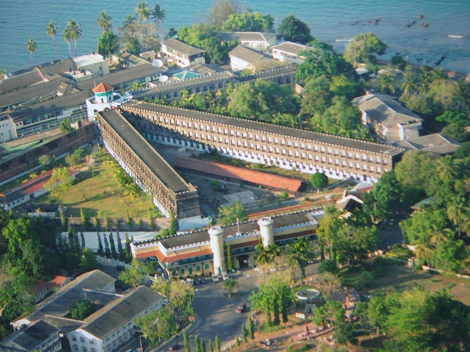

Elephant Beach (Havelock Island):
This beach is famous for its water sports and snorkeling opportunities. The clear blue waters and vibrant coral reefs make it a popular spot for underwater photography.

Radhanagar Beach (Havelock Island):
Known for its pristine white sand and crystal-clear waters, Radhanagar Beach is often cited as one of the most beautiful beaches in Asia. The sunsets here are particularly breathtaking.

North Bay Island
Known for its coral reefs and vibrant marine life, North Bay Island is a great spot for underwater photography and capturing the beauty of the marine ecosystem.

Cellular Jail (Port Blair):
This historical site is an important part of India's colonial history. Photos of the imposing structure and its exhibits can evoke a sense of the past.
Andaman and Nicobar Islands Tour Packages
Low Budget Packages
Cost Range: $300 - $500 per person (3-4 days)
Accommodation:
- Type: Budget hotels or guesthouses
- Features: Basic amenities, usually clean but minimalistic
- Examples: Local hotels in Port Blair or budget stays on Havelock Island
Itinerary:
- Day 1: Port Blair
- Arrival and check-in
- Visit to Cellular Jail
- Explore local markets or landmarks like Ross Island (boat ride may be extra)
- Day 2: Havelock Island
- Travel to Havelock Island by ferry (economy class)
- Visit Radhanagar Beach for relaxation
- Optional: Basic snorkeling or beachside activities
- Day 3: Neil Island (Optional)
- Visit Neil Island (if included, usually a day trip)
- Explore beaches like Bharatpur Beach and Laxmanpur Beach
- Day 4: Return
- Return to Port Blair
- Departure
Meals:
- Basic meal plans included, often limited to hotel restaurants or local eateries
Activities:
- Basic sightseeing
- Limited water sports
- Possible local cultural experiences
Extras:
- Extra activities like private boat trips or advanced water sports are typically not included
Mid-Range Packages
Cost Range: $500 - $1,000 per person (5-7 days)
Accommodation:
- Type: Mid-range hotels or resorts
- Features: Comfortable rooms with more amenities, possibly including swimming pools or spas
- Examples: Mid-range resorts on Havelock Island, comfortable hotels in Port Blair
Itinerary:
- Day 1: Port Blair
- Arrival and check-in
- Cellular Jail visit
- Evening at Corbyn's Cove Beach
- Day 2: Havelock Island
- Ferry to Havelock Island (may include a premium class)
- Relax at Radhanagar Beach
- Optional snorkeling or scuba diving
- Day 3: Havelock Island
- Visit Elephant Beach for water sports
- Explore local markets or optional tours
- Day 4: Neil Island
- Day trip to Neil Island
- Visit Bharatpur Beach and Laxmanpur Beach
- Day 5: Ross Island
- Day trip to Ross Island (entry and boat ride included)
- Return to Port Blair
- Day 6: Departure
- Free time for last-minute shopping or sightseeing
- Departure
Meals:
- Breakfast and some meals included
- Opportunities to dine at a variety of restaurants
Activities:
- Includes popular water sports (snorkeling, diving)
- Guided tours and some cultural experiences
- Possible eco-tourism activities
Extras:
- Some optional activities or excursions can be added for an extra fee
High-End Packages
Cost Range: $1,000 - $2,500+ per person (7-10 days)
Accommodation:
- Type: Luxury resorts or premium properties
- Features: High-end amenities such as private villas, personal butlers, and luxury spas
- Examples: 5-star resorts on Havelock Island, boutique resorts on Neil Island
Itinerary:
- Day 1: Port Blair
- Arrival in luxury transport
- Check-in at a premium hotel or resort
- Visit Cellular Jail with a private guide
- Dinner at a high-end restaurant
- Day 2: Havelock Island
- Private ferry or flight to Havelock Island
- Stay at a luxury resort
- Relax at Radhanagar Beach with a private setup
- Day 3: Havelock Island
- Private snorkeling or diving trip to exclusive spots
- Personalized beachside picnic or dining experience
- Day 4: Neil Island
- Private boat to Neil Island
- Explore Bharatpur Beach and Laxmanpur Beach with a personal guide
- Day 5: North Bay Island
- Private yacht or boat to North Bay Island
- Exclusive snorkeling or diving sessions
- Day 6: Ross Island
- Private tour of Ross Island
- Explore historical ruins with a dedicated guide
- Day 7: Barren Island (Optional)
- Private charter to view Barren Island volcano (if available and permitted)
- Day 8: Relaxation
- Leisure day at the resort with optional wellness treatments
- Day 9: Departure
- Private transfer to the airport
- Departure
Meals:
- Gourmet dining included
- Personalized meal plans and special dining experiences
Activities:
- Customized and exclusive experiences (private tours, luxury yacht trips)
- Advanced water sports and private diving sessions
- Wellness and spa treatments
About us
Tech Tonic Travels
Our mission is to be the leading and most trustworthy travel management company
that sets the standard for professionalism, reliability and transparency to its customers.
Contact us
#358, Road No:80, Jubilee Hills,
Hyderabad - 500096,
Telangana, India
 SeaShell- ₹10000-20000
SeaShell- ₹10000-20000